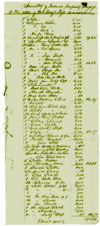

|

See
Dr. Ben Page's Probate record in the Archive
|
About
Probate Records
Probate records are those records and files kept by a probate court.
The word probate comes from Latin and means "to prove,"
in this case to prove in court the authenticity of a last will and testament
of someone who has died. In the absence of a will, inheritance laws
have provided for the passing on of property, belongings, and assets.
Probate courts are under state jurisdiction. State probate laws have
changed over the centuries. The kinds of records to be found in probate
files have changed accordingly. Probate laws can vary from state to
state but tend to follow certain general practices. The probate of the
estate of someone who has died and has left a will is called testate.
The probate of the estate of someone who has died but has not leave
a will is called intestate.
In Martha Ballard’s time, the late eighteenth century, not all
wills were probated. Outstanding debts had to be paid before the estate
could be distributed to heirs, but often, after a person died, the heirs
handled the estate informally. They paid off debts and then divided
the estate according to the will or as provided for by law, such as
apportioning the use of one third to a widow until her death. If debts
went unpaid, the court could open the estate, pay the debts, and then
distribute the remaining assets. More men than women were represented
in early American probate records because of laws restricting the ownership
of property by married women. Nevertheless, some women did appear in
probate records.
At times, probate courts have also had jurisdiction over other proceedings
such as adoptions, guardianships for minors, and name changes after
divorces. Now other courts handle these functions. Thus researchers
will find that the contents of probate files change over the years.
At the end of the twentieth century, nearly all deaths are followed
by probate, if only to establish that there is no need for probate proceedings.
If there is a will, then there is an executor of the will. If there
is no will, then three is an administrator of the estate.
Probate records can usually be found in the court records of the county
where the deceased was last living. In some cases, early records have
been moved to other depositories such as state archives, to allow for
better security, temperature and humidity control, and more space for
newer records. As storage space and available facilities change, so
do the sites of probate records.
Probate records can give the historian invaluable information. For
example, genealogists value the lists of heirs and divisees that indicate
familial relationships. People researching material culture can learn
much from household inventories. Historians trying to learn more about
particular buildings often find useful information in real estate inventories.
Probate Research Steps
- Determine where the deceased was living at time of death.
- Find out where the records
for that probate court jurisdiction at that time are now housed. Remember
that the boundaries and names of counties might have changed. If the
county (or state) has changed, then the records will be filed with the
records in the county at the time of death, not under the county’s
name as it is now. For instance, in Maine, parts of Lincoln County of
1760 are now parts of Kennebec, Waldo, Washington, Hancock, Androscoggin,
Sagadahoc and Knox counties. Save yourself steps by using the Internet
and the telephone to ask for and find the archive that you want. States
and counties often have Web home pages.
- Find the index of the probate records you want. This will be at the
archive that holds the probate records. Look on-line for a Web site
of the likely archive. Many archives now have Web home pages with holdings
information, telephone numbers, and directions for getting there. The
probate index you want might even be accessible on-line. Some indexes
and abstracts are also published or are on microfilm. Archives and research
libraries can help you find these.
- If necessary, go to the archive.
- Look in the index for the deceased’s name. This will usually
be listed alphabetically by surname. Find and note the docket number.
Usually the date of probate is also listed, and this is usually fairly
close to the date of death.
- Be thorough. Look also under the names of relatives of the deceased
— you might be surprised to find a file full of relevant documents.
- Make a list of files you wish to see and give these to the clerk,
who will retrieve the files for you. If the files are old and are in
a storage facility off-site, it might take several days for the request
to be filled. This is all the more reason to make the request on-line
or by telephone if you can.
- If files are missing, and they sometimes are, probate record books
might give some evidence of the probate. Probate record books are not
likely to contain all the information that is/was in the actual file,
however.
- Examine the files and make notes. The cost of making photocopies will
vary from archive to archive. It may be as little as 15 cents per page
to a dollar or more per page.
- Return the original file, as you found it, to the clerk.
- Label and file your findings, being sure to note the name of the archive,
address, telephone number, Web site address, and the date you did your
research there. I also usually pick up an information pamphlet at the
archive and file it in a dated folder of its own along with address
information, driving directions, and helpful archivists’ names,
for future reference.
Documents You Might Find in Probate Files
The documents found in a probate file will vary radically. They may
range from a single letter to a sheaf of court and family documents.
If the file represents proceedings to settle the estate of a deceased,
its contents might include...
- a will, if there was one
- codicils (amendments) to the will
- a petition for an executor or administrator
- probate of the will
- a list of heirs or divisees
- an inventory of the deceased’s estate at time of death
- a report of the committee for partition when heirs cannot agree
amongst themselves about how to divide the estate
- receipts from heirs and divisees
- a closing statement by the court
- an inventory of real estate and stocks and bonds held in joint tenancy,
even though not part of the probate proceedings
If the file represents a name
change, its contents might include...
- a petition for a name change
- a court decree
If the file represents adoption proceedings, its contents might include...
- a petition for adoption
- a deposition regarding the character of the prospective parents
Many thanks to Brian Burford of the N.H. State Archives, Concord,
NH.
|